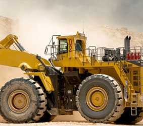

企业如何推进工业自动化
2019-10-24
工业自动化是在工业生产中广泛采用自动控制、自动调整装置，用以代替人工操纵机器和机器体系进行加工生产的趋势。在工业生产自动化条件下，人只是间接地照管和监督机器进行生产。
工业自动化，按其发展阶段可分为：
(1) 半自动化。即部分采用自动控制和自动装置，而另一部分则由人工操作机器进行生产。
(2) 全自动化。指生产过程中全部工序，包括上料、下料、装卸等，都不需要人直接进行生产操作 (人只是间接地看管和监督机器运转)，而由机器连续地、重复地自动生产出一个或一批产品。

工业自动化技术是一种运用控制理论、仪器仪表、计算机和其他信息技术，对工业生产过程实现检测、控制、优化、调度、管理和决策，达到增加产量、提高质量、降低消耗、确保安全等目的的综合性高技术，包括工业自动化软件、硬件和系统三大部分。 工业自动化技术作为20世纪现代制造领域中最重要的技术之一，主要解决生产效率与一致性问题。无论高速大批量制造企业还是追求灵活、柔性和定制化企业，都必须依靠自动化技术的应用。
自动化系统本身并不直接创造效益，但它对企业生产过程起着明显的提升作用：
（1）提高生产过程的安全性；
（2）提高生产效率；
（3）提高产品质量；
（4）减少生产过程的原材料、能源损耗。
上一篇：如何推进工业自动化